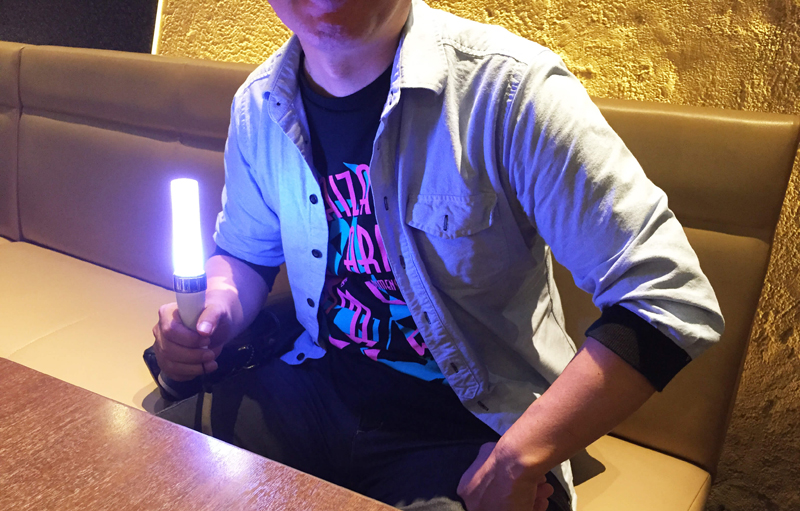

めでたく誕生日を迎えた未鈴ちゃんのために、古川未鈴最古参ヲタである未鈴ちゃんのお父さんがインタビューに応じ、昔話を交えながらメッセージを寄せてくれました。未鈴ちゃんの知られざる一面も垣間見えるかも！？
――未鈴ちゃんとの誕生日の思い出はありますか？
「誕生日だからといって変わったことをする家庭ではなかったし…特に思い出とかエピソードはないですね（笑）」
――それだと企画が破綻するのでなんかください！
「ええっと…プレゼントに『ゲームを買って』と言われることは多かったですね。初めのうちはゲームは私がやっているのを見て一緒にやり始めたんです。昔はマリオシリーズが好きだったんじゃないかな？ マリオカートとかよく一緒にやってたんですけど、いつの間にかドリフトとかショートカットを使いこなしていて、全然かなわなくなりました。未鈴はゲーム好きなイメージが定着していますけど、ゲーマーの頭角は小学生のころから現していたと思います」
――なるほど。ではその子どもの頃の未鈴ちゃんはどんな子でしたか？
「意外かも知れないけど小学生の頃は勉強出来てたんです。今でこそ、あんな感じですけど…。『勉強しろ』なんてそんなに言ったことはなかったんだけど、人並みにはできてましたね。小学校くらいの時は世界各国の首都を頑張って覚えたりしていて…今は絶対わからないでしょうけど（笑）。でも中学生の頃からあまり勉強しなくなった気がします」
――反抗期はなかったんですか？
「もちろん、それらしい時期はありましたよ。やっぱり普通の女の子と同じで中学から高校くらいの間ですかね。でもそのあとは仲良しというか、１０代終わりくらいのときに２人で海外旅行に行ったこともありますし、今でもたまにですけど買い物は一緒に行きますよ」
――未鈴ちゃんの芸能界への憧れはいつ頃から？
「はっきりいつというのはわからないんですけど、昔から踊ることは大好きでしたね。それこそ小さい頃のホームビデオなんか見るとほとんどが踊ってます。知ってるかと思いますけど、小学生の頃は年間パスポートを買ってよくディズニーランドに行っていて、よくダンサーさんになりたいって言ってましたね。あとＳＰＥＥＤさんにはすごく憧れていたみたいです」
――秋葉原でメイドさんをやっていると知ったときは？
「そんなに驚きはなかったです。高校を辞めてからも、わりと自由にさせていたんですよ。それでコンビニとかすし屋さんとかでアルバイトをし始めたので、メイドカフェで働いているのを知っても、「お！ちゃんと働いているな！」くらい。夜が遅いと迎えに行ったりもしましたけど、心配は特にしませんでした」
――でんぱ組.incとしての活動は、最初はどう感じました？
「『いつの間にかでんぱ組だった』という印象です。でんぱ組って最初は２人だったでしょ？ ディアステージって元々店舗内で色んなユニットを作って歌っていたから、でんぱ組もその一つくらいにしか考えてなかったんです。それが気付いたら人数も増えて、こんなに大きくなって…という感じですね」
――未鈴ちゃんのステージを初めて見たのは？
「うーん…正直覚えていないんですよ。ディアステワンマンのときか…ソロの方を先に見ていたのかな？ 最初の頃は本当に親目線でしか見られなくて、まぁ親なんで当然なんですけど『ＭＣちゃんと喋れよ』『噛むなよ』とか祈るように見ていました」
――いつ頃から安心して見られるようになりましたか？
「いつ頃かなぁ…はっきりとは言えないんですけど、やっぱり武道館公演の前後からかも。それこそW.W.DツアーのZEPPでやった独白の時なんかは未鈴が最後だったじゃないですか？ ここまでメンバーみんなしっかりとキメて、いよいよ未鈴の番になった時は『ちゃんとやれよ…！』という一心でした。そんなハラハラしてたのが代々木2DAYSの時なんかは安心して見ていましたからね。昔は心配でライブを見に行きましたけど、今はライブ自体が楽しみで足を運んでいます。昔はライブの後にメールでダメ出しとか反省会をしたこともありましたけど、それもまったくなくなりました。今は親心からオタ心に変わってライブを純粋に楽しんでます。」
――今では１人のオタクとして見に行っていると
「そうですね。今まで出たCDは全部買っていますしDVDやBDも持っています。でんでんぱっしょんの時かな？ ３０枚くらい積みました（笑）みりファンとかはもっと積んだ気も…。あと最近だとヨーロッパツアーにも行きました。ご飯でも一緒に食べようかと思ったんだけど、すごく忙しそうで…今思えばレコーディングや撮影までこなしてたんですよね。それでも１回くらいは食事する時間もらえたんですけど。」
――さすが強オタ！
いやいや（笑）けっこうライブは通ってるんですけど接触とかは興味ないし…みなさんほど情報も追えてないので。でもねむさんはいつも話しかけてくれて嬉しいですね。あ、もちろん他のメンバーも礼儀正しく挨拶してくれますよ（笑）
――たくさん通った中で特に印象に残っているライブはありますか？
「やはり、W.W.DツアーのZEPP。それとSHIBUYA BOXXでやったキラキラチューンのリリイベかな。もがちゃんがいなかったときで、みんながもがちゃんパートで紫のサイリウムを焚いていたのが印象深いです」
――あの時のライブはオタの中でも人気ですね。未鈴ちゃんが昔と変わったと感じる部分はありますか？
「ステージ上で余裕が出て来ている部分かな。対応力というのか…TOKYO FMで始まった『でんぱch.』なんかもうまくしゃべっているなと思いますよ。昔ステージもMCも本当にハラハラさせられましたけど、今は本当に安心して見てられる。でも普段の雰囲気はまったく変わらない。オフのときは、もう完全にスイッチオフという感じだし昔となにも変わってないです。でも、新しい仕事が決まれば得意気に教えてくれるし、音源も真っ先に聞かせてくれるのはすごく嬉しいですね（笑）」
――最後に未鈴ちゃんへ誕生日のメッセージをお願いします
「今さら誕生日だからっておめでとうとかいうのは恥ずかしいんだけど、これからもオタのみんなの夢を叶えてほしい。ここ最近は右肩上がりで来たけど、もっともっと大きい会場やメディアに出て…それこそアリーナとか、紅白とか。大きい舞台で輝いてください。これからも応援しています。がんばれよ！」
――とかっこよく〆つつ現在の推しアンドクレイジーの逢沢ありあちゃんのアピールを忘れないみりんパパでした。ありがとうございました！